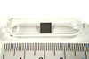

thorium

Definition: Thorium is a weakly radioactive metallic chemical element with the symbol Th and atomic number 90. Thorium is silvery and tarnishes black when it is exposed to air, forming thorium dioxide; it is moderately soft and malleable and has a high melting point. Thorium is an electropositive actinide whose chemistry is dominated by the +4 oxidation state; it is quite reactive and can ignite in air when finely divided.
Source: Wikipedia
Wikipedia Page
Wikidata Page